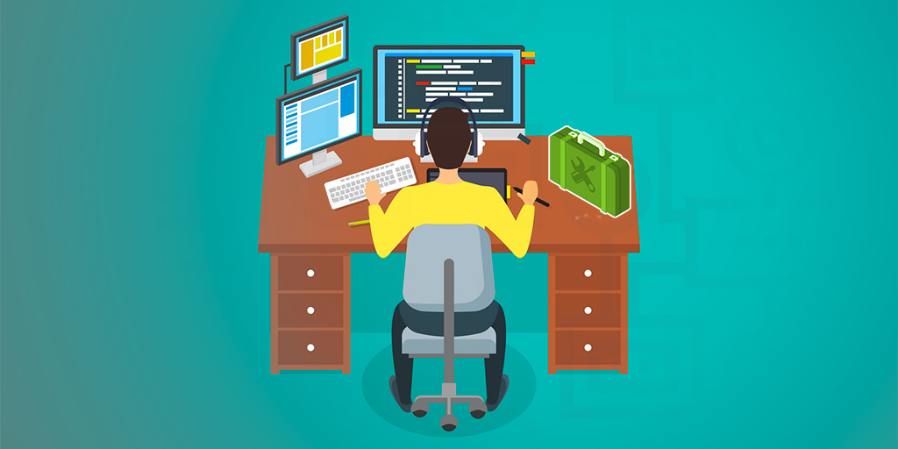

JA
- Operator
- Justine Afaga
- Role
- CS Student
- Location
- Honolulu, HI
- Status
- Open
Hello, world. I’m
< Computer Science Student />
I turn curiosity into useful software—building thoughtful web experiences while exploring artificial intelligence, hardware, and the systems that connect them.
01 / ABOUT
➜ whoami
I’m a Computer Science student at the University of Hawaiʻi at Mānoa, graduating in Spring 2026. What began as curiosity about the devices I grew up using has become a drive to understand—and build—the software behind them.
➜ cat mission.txt
I care about practical, people-centered technology. My work spans full-stack web development, Python, Java, and early explorations in AI, with an approach grounded in clear communication, steady iteration, and community.
02 / CAPABILITIES
Select a node to see how it fits into my toolkit.
Python · Java · C++ · JavaScript
HTML · CSS · React concepts · Bootstrap
Git · GitHub · Prisma · Vercel · macOS
Artificial intelligence · Hardware · Software systems
03 / JOURNEY
Building a foundation in software engineering, programming, user interfaces, design patterns, and collaborative development. Expected graduation: Spring 2026.
Supported customers across the sales floor and register while helping maintain a welcoming, organized retail environment during a seasonal role.
Supported Hawak Kamay outreach and call-center efforts for Filipino community members affected by the Lahaina fires and the October reopening.
Contributed to local service efforts including tree planting, night markets, and support for kūpuna—strengthening a lasting commitment to community.
04 / SELECTED WORK
 FEATURED
FEATUREDA community web app helping UH Mānoa musicians showcase their style, discover collaborators, and organize jam sessions.

A first-year Python exercise that transforms user input through capitalization and character substitutions to practice string logic.

A long-term research and presentation project examining homelessness and strengthening research, teamwork, and public speaking.

A student-led commercial bakery project centered on planning, delegation, mass production, and showing appreciation to school staff.
Original long-form project notes are preserved in /content/projects for easy editing.
05 / NOTES

SEP 25, 2024 · REFLECTION
Why consistent standards help code communicate clearly, support teamwork, and stay maintainable over time.
Read source essay →
DEC 05, 2024 · SOFTWARE DESIGN
A student perspective on state, factory, and singleton patterns—and how they shape clearer solutions.
Read source essay →
DEC 16, 2024 · ARTIFICIAL INTELLIGENCE
A candid reflection on using AI as a tutor, debugger, brainstorming partner—and never as a substitute for thinking.
Read source essay →06 / CONNECTION
{
"status": "open_to_work",
"email": "afagajus@hawaii.edu",
"github": "@jafaga",
"linkedin": "Justine Afaga",
"location": "Honolulu, HI"
}// Let’s build something useful.